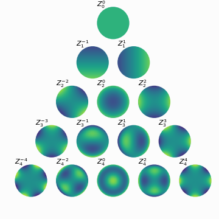

Dimension Reduction via Zernike Polynomials¶
What is Zernike Polynomials¶
The Zernike polynomials (ZP) are a complete set of orthogonal basis functions defined in the unit disk denoted by the double indexing scheme \(Z_{n}^{m}\), where \(n\) is a nonnegative integer, and \(m=\{-n,-n+2,-n+4, \cdots ,n\}\) for a given \(n\). The double indices \((n, n)\) are ordered into a single index \(j=(n(n+2)+m)/2\). Each ZP consists of a normalization term \(N_{n}^{m}\), a radial term \(R_{n}^{|m|}\) , and an azimuthal term \(\sin(m\theta)\) or \(\cos(m\theta)\):
Here, \(R_{n}^{|m|}\) and \(N_{n}^{m}\) are given by
and
where \(\delta_{m 0}\) is the Kronecker delta.
Stempy provides the class ZPs to generate a series of polynomials. By specifying the maximum radial index n_max, and the size of polynomial array size, the Zernike polynomials can be initialized and array data can be accessed by its attribute data. Moreover, the user can select polynomials with different symmetry characteristics if the states parameter is given. For example, states = 3 will only select polynomial terms with \(|m|=3\), and states = [3, 6] will select polynomial terms with \(|m|=3, 6\).
1 2 3 4 5 6 7 8 9 10 | from stempy.feature import ZPs
# intialize zps
zps = ZPs(n_max=10, size=256, states=None)
# polynomial arrays
data = zps.data
# n indices
n = zps.n
# m indices
m = zps.m
|
Visualization of Zernike Polynomials¶
The first 21 terms of Zernike polynomials arranged in a pyramid form. Each polynomial term is labelled by \(Z_n^m\), where n is the radial index and m is the azimuthal index. All Zernike polynomials are vertically arranged by n and horizontally ordered by m.
The array data of Zernike polynomials can be visualized above and they show prominent symmetry characteristics.
Zernike Moments¶
Any square-integrable functions \(f(\rho, \theta)\) within a unit disk can be decomposed into an infinite series comprising weighted Zernike polynomials:
where the coefficients \(A_{n}^{m}\) is can be calculated as,
Visualization of Zernike Moments¶